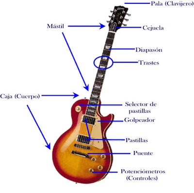
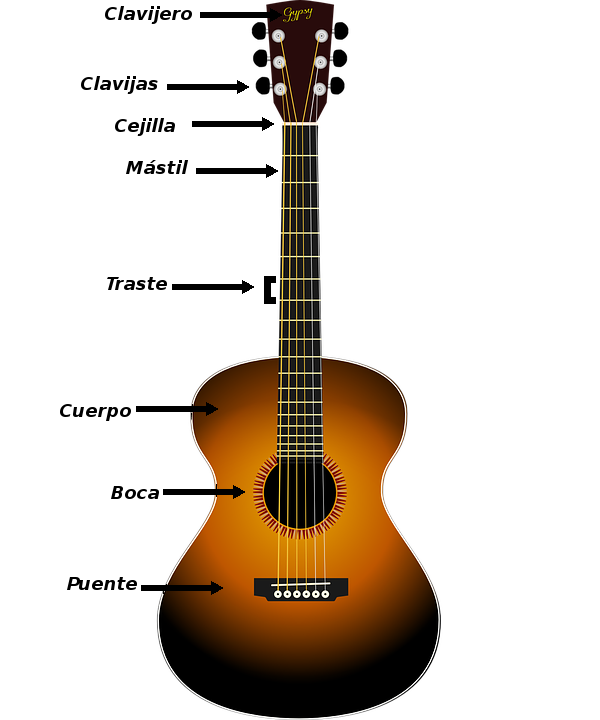

Partes de la guitarra
 Notas de la guitarra
Es importante saber navegar todo el mástil y ésto se puede lograr memorizando solamente las notas de la 5ta y 6ta cuerda. Después de memorizar estas notas se pueden hacer varios trucos para encontrar las demás notas de acuerdo a los intervalos encontrados en el mástil de la guitarra
| Número de traste | 0 | 1 | 2 | 3 | 4 | 5 | 6 | 7 | 8 | 9 | 10 | 11 | 12 |
|---|---|---|---|---|---|---|---|---|---|---|---|---|---|
| 6ta cuerda | E | F | F# | G | G# | A | A# | B | C | C# | D | D# | E |
| 5ta cuerda | A | A# | B | C | C# | D | D# | E | F | F# | G | G# | A |
| Número de traste | 0 | 1 | 2 | 3 | 4 | 5 | 6 | 7 | 8 | 9 | 10 | 11 | 12 |
|---|---|---|---|---|---|---|---|---|---|---|---|---|---|
| 6ta cuerda | MI | FA | FA# | SOL | SOL# | LA | LA# | SI | DO | DO# | RE | RE# | MI |
| 5ta cuerda | LA | LA# | SI | DO | DO# | RE | RE# | MI | FA | FA# | SOL | SOL# | LA |